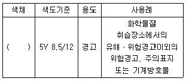
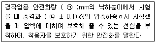
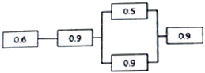
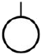
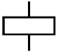
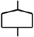
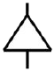
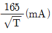
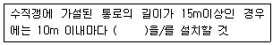
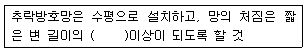

산업안전산업기사 (2018-04-28 기출문제)
1과목: 산업안전관리론
1. 안전교육 방법 중 TWI의 교육과정이 아닌 것은?
- 작업지도 훈련
- 인간관계 훈련
- 정책수립 훈련
- 작업방법 훈련
(정답률: 87%)

2. 근로자가 작업대 위에서 전기공사 작업 중 감전에 의하여 지면으로 떨어져 다리에 골절상해를 입은 경우의 기인물과 가해물로 옳은 것은?
- 기인물-작업대, 가해물-지면
- 기인물-전기, 가해물-지면
- 기인물-지면, 가해물-전기
- 기인물-작업대, 가해물-전기
(정답률: 84%)
3. 산업재해에 있어 인명이나 물적 등 일체의 피해가 없는 사고를 무엇이라고 하는가?
- Near Accident
- Good Accident
- True Accident
- Original Accident
(정답률: 79%)
4. 내전압용절연장갑의 성능기준상 최대사용 전압에 따른 절연장갑의 구분 중 00등급의 색상으로 옳은 것은?
- 노란색
- 흰색
- 녹색
- 갈색
(정답률: 70%)
5. 점검시기에 의한 안전점검의 분류에 해당하지 않는 것은?
- 성능점검
- 정기점검
- 임시점검
- 특별점검
(정답률: 76%)
6. 재해율 중 재직 근로자 1000명 당 1년간 발생하는 재해자 수를 나타내는 것은?
- 연천인율
- 도수율
- 강도율
- 종합재해지수
(정답률: 81%)
7. 파블로프(Pavlov)의 조건반사설에 의한 학습 이론의 원리에 해당되지 않는 것은?
- 일관성의 원리
- 시간의 원리
- 강도의 원리
- 준비성의 원리
(정답률: 63%)
8. 착오의 요인 중 인지과정의 착오에 해당하지 않는 것은?
- 정서불안정
- 감각차단현상
- 정보부족
- 생리ㆍ심리적 능력의 한계
(정답률: 68%)
9. 산업안전보건법령상 안전관리자가 수행하여야 할 업무가 아닌 것은? (단, 그밖에 안전에 관한 사항으로서 고용노동부 장관이 정하는 사항은 제외한다.)
- 위험성평가에 관한 보좌 및 조언ㆍ지도
- 물질안전보건자료의 게시 또는 비치에 관한 보좌 및 조언ㆍ지도
- 사업장 순회점검ㆍ지도 및 조치의 건의
- 산업재해에 관한 통계의 유지ㆍ관리ㆍ분석을 위한 보좌 및 조언ㆍ지도
(정답률: 69%)
10. 모랄 서베이(Morale Suvey)의 효용이 아닌 것은?
- 조직 또는 구성원의 성과를 비교ㆍ분석한다.
- 종업원의 정화(Catharsis)작용을 촉진시킨다.
- 경영관리를 개선하는 자료를 얻는다.
- 근로자의 심리 또는 욕구를 파악하여 불만을 해소하고, 노동의욕을 높인다.
(정답률: 77%)
11. 부주의 현상 중 의식의 우회에 대한 예방 대책으로 옳은 것은?
- 안전교육
- 표준작업제도 도입
- 상담
- 적성배치
(정답률: 79%)
12. 산업안전보건법령상 안전ㆍ보건표지의 색채, 색도기준 및 용도 중 다음 ()안에 알맞은 것은?

- 파란색
- 노란색
- 빨간색
- 검은색
(정답률: 82%)
13. 보호구 안전인증 고시에 따른 안전화의 정의 중 다음 ()안에 알맞은 것은?

- ㉠ 500, ㉡ 10.0
- ㉠ 250, ㉡ 10.0
- ㉠ 500, ㉡ 4.4
- ㉠ 250, ㉡ 4.4
(정답률: 80%)
14. 산업안전보건법령상 특별안전ㆍ보건교육 대상 작업별 교육내용 중 밀폐공간에서의 작업별 교육내용이 아닌 것은? (단. 그 밖에 안전ㆍ보건관리에 필요한 사항은 제외한다.)
- 산소농도 측정 및 작업환경에 관한 사항
- 유해물질의 인체에 미치는 영향
- 보호구 착용 및 사용방법에 관한 사항
- 사고 시의 응급처리 및 비상 시 구출에 관한 사항
(정답률: 81%)
15. 산업안전보건법령상 근로자 안전ㆍ보건교육 중 채용 시의 교육 및 작업내용 변경시의 교육사항으로 옳은 것은?
- 물질안전보건자료에 관한 사항
- 건강증진 및 질병 예방에 관한 사항
- 유해ㆍ위험 작업환경 관리에 관한 사항
- 표준안전작업방법 및 지도 요령에 관한 사항
(정답률: 62%)
16. 지난 한 해 동안 산업재해로 인하여 직접손실 비용이 3조 1600억원이 발생한 경우의 총재해 코스트는? (단, 하인리히의 재해 손실비 평가방식을 적용한다.)
- 6조 3200억원
- 9조 4800억원
- 12조 6400억원
- 15조 8000억원
(정답률: 69%)
17. 안전모의 시험성능기준 항목이 아닌 것은?
- 내관통성
- 충격흡수성
- 내구성
- 난연성
(정답률: 62%)
18. 인간관계의 매커니즘 중 다른 사람으로부터의 판단이나 행동을 무비판적으로 논리적, 사실적 근거 없이 받아들이는 것은?
- 모방(imitation)
- 투사(projection)
- 동일화(identification)
- 암시(suggestion)
(정답률: 57%)
19. 안전교육 훈련의 기법 중 하버드 학파의 5단계 교수법을 순서대로 나열한 것으로 옳은 것은?
- 총괄→연합→준비→교시→응용
- 준비→교시→연합→총괄→응용
- 교시→준비→연합→응용→총괄
- 응용→연합→교시→준비→총괄
(정답률: 87%)
20. 매슬로우(Maslow)의 욕구단계 이론 중 제5단계 욕구로 옳은 것은?
- 안전에 대한 욕구
- 자아실현의 욕구
- 사회적(애정적) 욕구
- 존경과 긍지에 대한 욕구
(정답률: 86%)
2과목: 인간공학 및 시스템안전공학
21. 소음성 난청 유소견자로 판정하는 구분을 나타내는 것은?
- A
- C
- D1
- D2
(정답률: 70%)
22. 휴먼 에러의 배후 요소 중 작업방법, 작업순서, 작업정보, 작업환경과 가장 관련이 깊은 것은?
- man
- machine
- media
- management
(정답률: 68%)
23. 시스템의 정의에 포함되는 조건 중 틀린 것은?
- 제약된 조건 없이 수행
- 요소의 집합에 의해 구성
- 시스템 상호간에 관계를 유지
- 어떤 목적을 위하여 작용하는 집합체
(정답률: 80%)
24. 단위 면적 당 표면을 떠나는 빛의 양을 설명한 것으로 맞는 것은?
- 휘도
- 조도
- 광도
- 반사율
(정답률: 57%)
25. 그림과 같은 시스템에서 전체 시스템의 신뢰도는 얼마인가? (단, 네모 안의 숫자는 각 부품의 신뢰도이다.)

- 0.4104
- 0.4617
- 0.6314
- 0.6814
(정답률: 68%)
26. 결함수분석법에서 일정 조합 안에 포함되어 있는 기본사상들이 모두 발생하지 않으면 틀림없이 정상사상(top event)이 발생되지 않는 조합을 무엇이라고 하는가?
- 컷셋(cut set)
- 패스셋(path set)
- 결함수셋(fault tree set)
- 부울대수(boolean algebra)
(정답률: 72%)
27. 반경 10cm의 조종구(ball control)를 30° 움직였을 때, 표시장치가 2cm이동하였다면 통제표시비(C/R비)는 약 얼마인가?
- 1.3
- 2.6
- 5.2
- 7.8
(정답률: 59%)
28. 건습지수로서 습구온도와 건구온도의 가중 평균치를 나타내는 Oxford지수의 공식으로 맞는 것은?
- WD=0.65WB+0.35D8
- WD=0.75WB+0.25D8
- WD=0.85WB+0.15D8
- WD=0.95WB+0.⑤D8
(정답률: 73%)
29. 인간의 기대하는 바와 자극 또는 반응들이 일치하는 관계를 무엇이라 하는가?
- 관련성
- 반응성
- 양립성
- 자극성
(정답률: 72%)
30. FTA에서 어떤 고장이나 실수를 일으키지 않으면 정상사상(top evebt)은 일어나지 않는다고 하는 것으로 시스템의 신뢰성을 표시하는 것은?
- cut set
- minimal cut set
- fre event
- minimal path set
(정답률: 67%)
31. Chapanis의 위험수준에 의한 위험발생률 분석에 대한 설명으로 맞는 것은?
- 자주 발생하는(frequent)＞10-3/day
- 가끔 발생하는(occasional)＞10-5/day
- 거의 발생하지 않는(remote)＞10-6/day
- 극히 발생하지 않는(impossible)＞10-8/day
(정답률: 57%)
32. 체계분석 및 설계에 있어서 인간공학적 노력의 효능을 산정하는 척도의 기준에 포함되지 않는 것은?
- 성능의 향상
- 훈련비용의 절감
- 인력 이용율의 저하
- 생산 및 보전의 경제성 향상
(정답률: 73%)
33. 정보를 전송하기 위해 청각적 표시장치를 사용해야 효과적인 경우는?
- 전언이 복잡할 경우
- 전언이 후에 재참조될 경우
- 전언이 공간적인 위치를 다룰 경우
- 전언이 즉각적인 행동을 요구할 경우
(정답률: 82%)
34. 작업기억(working memory)에서 일어나는 정보코드화에 속하지 않는 것은?
- 의미 코드화
- 음성 코드화
- 시각 코드화
- 다차원 코드화
(정답률: 77%)
35. 인체에서 뼈의 주요 기능으로 볼 수 없는 것은?
- 대사작용
- 신체의지지
- 조혈작용
- 장기의 보호
(정답률: 79%)
36. 인간의 눈에서 빛이 가장 먼저 접촉하는 부분은?
- 각막
- 망막
- 초자체
- 수정체
(정답률: 79%)
37. 인간공학적인 의자설계를 위한 일반적 원칙으로 적절하지 않은 것은?
- 척추의 허리부분은 요부 전만을 유지한다
- 허리 강화를 위하여 쿠션을 설치하지 않는다.
- 좌판의 앞 모서리 부분은 5cm 정도 낮아야 한다.
- 좌판과 등받이 사이의 각도는 95~1⑤°를 유지하도록 한다.
(정답률: 80%)
38. 윤활관리시스템에서 준수해야 하는 4가지 원칙이 아닌 것은?
- 적정량 준수
- 다양한 윤활제의 혼합
- 올바른 윤활법의 선택
- 윤활기간의 올바른 준수
(정답률: 89%)
39. FT도에서 사용되는 기호 중 “전이기호”를 나타내는 기호는?




(정답률: 74%)
40. 설비의 위험을 예방하기 위한 안정성 평가 단계 중 가장 마지막에 해당하는 것은?
- 재평가
- 정성적 평가
- 안전대책
- 정량적 평가
(정답률: 78%)
3과목: 기계위험방지기술
41. 산업안전보건법형에서 규정하는 양중기에 속하지 않는 것은?
- 호이스트
- 이동식 크레인
- 곤돌라
- 체인블록
(정답률: 73%)
42. 산업용 로봇에 사용되는 안전매트에 요구되는 일반구조 및 표시에 관한 설명으로 옳지 않은 것은?
- 단선경보장치가 부착되어 있어야 한다.
- 감응시간을 조절하는 장치는 부착되어있지 않아야 한다.
- 자율안전확인의 효시 외에 작동하중, 감응시간, 복귀신호의 자동 또는 수동여부, 대소인공용 여부를 추가로 표시해야 한다.
- 감응도 조절장치가 있는 경우 봉인되어 있지 않아야 한다.
(정답률: 59%)
43. 금형 작업의 안전과 관련하여 금형 부품의 조립 시 주의 사항으로 틀린 것은?
- 맞춤 핀을 조립할 때에는 헐거운 끼워맞춤으로 한다.
- 파일럿 핀, 직경이 작은 펀치, 핀 게이지 등의 삽입부품은 빠질 위험이 있으므로 플랜지를 설치하는 등 이탈방지대책을 세워둔다.
- 쿠션 핀을 사용할 경우에는 상승시 누름판의 이탈방지를 위하여 단붙임한 나사로 견고히 조여야 한다.
- 가이드 포스트, 샹크는 확실하게 고정한다.
(정답률: 84%)
44. 선반 작업 시 주의사항으로 틀린 것은?
- 회전 중에 가공품을 직접 만지지 않는다.
- 공작물의 설치가 끝나면, 척에서 렌치류는 곧바로 제거한다.
- 칩(chip)이 비산할 때는 보안경을 쓰고 방호판을 설치하여 사용한다.
- 돌리개는 적정 크기의 것을 선택하고, 심압대 스핀들은 가능한 길게 나오도록 한다.
(정답률: 80%)
45. 다음 중 기계 고장률의 기본 모형이 아닌 것은?
- 초기 고장
- 우발 고장
- 영구 고장
- 마모 고장
(정답률: 79%)
46. 연삭숫돌의 덮개 재료 선정 시 최고속도에 따라 허용되는 덮개두께가 달라지는데 동일한 최고속도에서 가장 얇은 판을 쓸 수 있는 덮개의 재료로 다음 중 가장 적절한 것은?
- 회주철
- 압연강판
- 가단주철
- 탄소강주강품
(정답률: 73%)
47. 프레스의 양수조작식 방호장치에서 누름버튼의 상호간 내측거리는 몇 mm이상이어야 하는가?
- 200
- 300
- 400
- 500
(정답률: 85%)
48. 와이어로프의 절단하중이 11160N이고, 한 줄로 물건을 매달고자 할 때 안전계수를 6으로하면 몇 N이하의 물건을 매달 수 있는가?
- 1860
- 3720
- 5580
- 66960
(정답률: 76%)
49. 지게차의 헤드가드가 갖추어야 할 조건에 대한 설명으로 틀린 것은?(관련 규정 개정전 문제로 여기서는 기존 정답인 2번을 누르면 정답 처리됩니다. 자세한 내용은 해설을 참고하세요.)
- 강도는 지게차 최대하중의 2배 값(4톤을 넘는 값에 대해서는 4톤으로 한다)의 등분포정하중에 견딜 수 있을 것
- 상부틀의 각 개구의 폭 또는 길이가 26cm미만일 것
- 운전자가 앉아서 조작하는 방식의 지게차의 경우에는 운전자 좌석의 윗면에서 헤드가드의 상부틀의 아랫면까지의 높이가 1m이상일 것
- 운전자가 서서 조작하는 방식의 지게차는 운전석의 바닥면에서 헤드가드 상부틀의 하면까지의 높이가 2m 이상일 것
(정답률: 82%)
50. 작업자의 신체움직임을 감지하여 프레스의 작동을 급정지시키는 광전자식 안전장치를 부착한 프레스가 있다. 안전거리가 32cm라면 급정지에 소요되는 시간은 최대 몇 초 이내이어야 하는가? (단, 급정지에 소요되는 시간은 손이 광선을 차단한 순간부터 급정지기구가 작동하여 하강하는 슬라이드가 정지할 때까지의 시간을 의미한다.)
- 0.1초
- 0.2초
- 0.5초
- 1초
(정답률: 57%)
51. 위험한 작업점과 작업자 사이의 위험을 차단시키는 격리형 방호장치가 아닌 것은?
- 접촉반응형 방호장치
- 완전차단형 방호장치
- 덮개형 방호장치
- 안전방책
(정답률: 61%)
52. 동력 프레스의 분류하는데 있어서 그 종류에 속하지 않는 것은?
- 크랭크 프레스
- 토글 프레스
- 마찰 프레스
- 터릿 프레스
(정답률: 62%)
53. 선반에서 절삭가공 중 발생하는 연속적인 칩을 자동적으로 끊어 주는 역할을 하는 것은?
- 칩 브레이커
- 방진구
- 보안경
- 커버
(정답률: 86%)
54. 구멍이 있거나 노치(notch)등이 있는 재료에 외력이 작용할 때 가장 현저하게 나타나는 현상은?
- 가공경화
- 피로
- 응력집중
- 크리프(creep)
(정답률: 63%)
55. 근로자의 추락 등에 의한 위험을 방지하기 위하여 안전난간을 설치하는 경우, 이에 관한 구조 및 설치요건으로 틀린 것은?
- 상부난간대, 중간난간대, 발끝막이 및 난간기둥으로 구성할 것
- 발끝막이판은 바닥면 등으로부터 5cm이상의 높이를 유지할 것
- 난간댄은 지름 2.7cm 이상의 금속제 파이프나 그 이상의 강도를 가진 재료일 것
- 안전난간은 구조적으로 가장 취약한 지점에서 가장 취약한 방향으로 작용하는 100kg이상의 하중에 견딜 수 있을 것
(정답률: 72%)
56. 휴대용 연삭기 덮개의 노출각도 기준은?
- 60°이내
- 90°이내
- 150°이내
- 180°이내
(정답률: 50%)
57. 제철공장에서는 주괴(ingot)를 운반하는데 주로 컨베이어를 사용하고 있다. 이 컨베이어에 대한 방호조치의 설명으로 옳지 않은 것은?
- 근로자의 신체의 일부가 말려드는 등 근로자에게 위험을 미칠 우려가 있을 때 및 비상시에는 즉시 컨베이어의 운전을 정지시킬 수 있는 장치를 설치하여야 한다.
- 화물의 낙하로 인하여 근로자에게 위험을 미칠 우려가 있는 때에는 컨베이어에 덮개 또는 울을 설치하는 등 낙하방지를 위한 조치를 하여야 한다.
- 수평상태로만 사용하는 컨베이어의 경우 정전, 전압 강하 등에 의한 화물 또는 운반구의 이탈 및 역주행을 방지하는 장치를 갖추어야 한다.
- 운전 중인 컨베이어 위로 근로자를 넘어가도록 하는 때에는 근로자의 위험을 방지하기 위하여 건널다리를 설치하는 등 필요한 조치를 하여야 한다.
(정답률: 60%)
58. 목재가공용 둥근톱에서 둥근톱의 두께가 4mm일 때 분할날의 두께는 몇 mm이상이어야 하는가?
- 4.0
- 4.2
- 4.4
- 4.8
(정답률: 77%)
59. 롤러기에서 손조작식 급정지장치의 조작부 설치위치로 옳은 것은? (단, 위치는 급정지장치의 조작부의 중심점을 기준으로 한다.)
- 밑면으로부터 0.4m 이상, 0.6m 이내
- 밑면으로부터 0.8m 이상, 1.1m 이내
- 밑면으로부터 0.8m 이내
- 밑면으로부터 1.8m 이내
(정답률: 70%)
60. 보일러 수에 유지류, 고형물 등의 부유물로 인한 거품이 발생하여 수위를 판단하지 못하는 현상은?
- 프라이밍(priming)
- 캐리오버(carry over)
- 포밍(foaming)
- 워터해머(water hammer)
(정답률: 84%)
4과목: 전기 및 화학설비위험방지기술
61. 폭발위험장소의 분류 중 1종 장소에 해당하는 것은?
- 폭발성 가스 분위기가 연속적, 장기간 또는 빈번하게 존재하는 장소
- 폭발성 가스 분위기가 정상작동 중 조성되지 않거나 조성된다 하더라도 짧은 기간에만 존재할 수 있는 장소
- 폭발성 가스 분위기가 정상작동 중 주기적 또는 빈번하게 생성되는 장소
- 폭발성 가스 분위기가 장기간 또는 거의 조성되지 않는 장소
(정답률: 71%)
62. 인체저항을 5000Ω으로 가정하면 심실세동을 일으키는 전류에서의 전기에너지는? (단, 심실세동전류는

이며 통전시간 T는 1초이고 전원은 교류전현파이다.)- 33J
- 130J
- 136J
- 142J
(정답률: 52%)
63. 전선 간에 가해지는 전압이 어떤 값 이상으로 되면 전선 주위의 전기장이 강하게 되어 전선 표면의 공기가 국부적으로 절연이 파괴 되어 빛과 소리를 내는 것은?
- 표피 작용
- 페란티 효과
- 코로나 현상
- 근접 현상
(정답률: 79%)
64. 누전에 의한 감전의 위험을 방지하기 위하여 반드시 접지를 하여야만 하는 부분에 해당되지 않는 것은?
- 절연대 위 등과 같이 감전 위험이 없는 장소에서 사용하는 전기 기계ㆍ기구의 금속체
- 전기 기계ㆍ기구의 금속제 외함, 금속제 외피 및 철대
- 전기를 사용하지 아니하는 설비 중 전동식 양중기의 프레임과 궤도에 해당하는 금속체
- 코드와 플러그를 접속하여 사용하는 휴대형 전동기계ㆍ기구의 노출된 비충전 금속체
(정답률: 65%)
65. 정전기 발생에 영향을 주는 요인이 아닌 것은?
- 물체의 특성
- 물체의 표면상태
- 접촉면적 및 압력
- 응집 속도
(정답률: 61%)
66. 전기기계ㆍ기구에 대하여 누전에 의한 감전위험을 방지하기 위하여 누전차단기를 전기기계ㆍ기구에 접속할 때 준수하여야 할 사항으로 옳은 것은?
- 누전차단기는 정격감도전류가 60mA이하이고 작동시간은 0.1초 이내일 것
- 누전차단기는 정격감도전류가 50mA이하이고 작동시간은 0.08초 이내일 것
- 누전차단기는 정격감도전류가 40mA이하이고 작동시간은 0.06초 이내일 것
- 누전차단기는 정격감도전류가 30mA이하이고 작동시간은 0.03초 이내일 것
(정답률: 77%)
67. 방폭구조의 종류 중 방진방폭구조를 나타내는 표시로 옳은 것은?
- DDP
- tD
- XDP
- DP
(정답률: 63%)
68. 고압 또는 특고압의 기계기구ㆍ모선 등을 옥외에 시설하는 발전소ㆍ변전소ㆍ개폐소 또는 이에 준하는 곳에는 구내에 취급자 이외의 자가 들어가지 못하도록 하기 위한 시설의 기준에 대한 설명으로 틀린 것은?
- 울타리ㆍ탑 등의 높이는 1.5 이상으로 시설하여야 한다.
- 출입구에는 출입금지의 표시를 하여야 한다.
- 출입구에는 자물쇠장치 기타 적당한 장치를 하여야 한다.
- 지표면과 울타리ㆍ담 등의 하단사이의 간격은 15cm이하로 하여야 한다.
(정답률: 59%)
69. 전기기계ㆍ기구의 조작부분을 점검하거나 보수하는 경우에는 근로자가 안전하게 작업할 수 있도록 전기기계ㆍ기구로부터 최소 몇 cm이상의 작업공간 폭을 확보하여야 하는가? (단, 작업공간을 확보하는 것이 곤란하여 절연용 보호구를 작용하도록 한 경우 제외)
- 60cm
- 70cm
- 80cm
- 90cm
(정답률: 50%)
70. 과전류차단기로 시설하는 퓨즈 중 고압전로에 사용하는 비포장 퓨즈에 대한 설명으로 옳은 것은?
- 정적전류의 1.25배의 전류에 견디고 또한 2배의 전류로 2분 안에 용단되는 것이어야 한다.
- 정적전류의 1.25배의 전류에 견디고 또한 2배의 전류로 4분 안에 용단되는 것이어야 한다.
- 정적전류의 2배의 전류에 견디고 또한 2배의 전류로 2분 안에 용단되는 것이어야 한다.
- 정적전류의 2배의 전류에 견디고 또한 2배의 전류로 4분 안에 용단되는 것이어야 한다.
(정답률: 54%)
71. 다음 중 물리적 공정에 해당되는 것은?
- 유화중합
- 축합중합
- 산화
- 증류
(정답률: 61%)
72. 산화성 액체 중 질산의 성질에 관한 설명으로 옳지 않은 것은?
- 피부 및 의복을 부식하는 성질이 있다.
- 쉽게 연소하는 가연성 물질이므로 화기에 극도로 주의한다.
- 위험물 유출 시 건조사를 뿌리거나 중화제로 중화한다.
- 물과 반응하면 발열반응을 일으키므로 물과의 접촉을 피한다.
(정답률: 50%)
73. 최소 착화에너지가 0.25mJ, 극간 정전용량이 10pF인 부탄가스 버너를 점화시키기 위해서 최소 얼마 이상의 전압을 인가하여야 하는가?
- 0.52×102V
- 0.74×103V
- 7.07×103V
- 5.03×105V
(정답률: 56%)
74. 다음 중 유류화재의 종류에 해당하는 것은?
- A급
- B급
- C급
- D급
(정답률: 83%)
75. 다음 중 가연성 가스의 폭발범위에 관한 설명으로 틀린 것은?
- 상한과 하한이 있다.
- 압력과 무관하다.
- 공기와 혼합된 가연성 가스의 체적 농도로 표시된다.
- 가연성 가스의 중류에 따라 다른 값을 갖는다.
(정답률: 79%)
76. 산업안전보건법령상 관리대상 유해물질의 운반 및 저장 방법으로 적절하지 않은 것은?
- 저장장소에는 관계 근로자가 아닌 사람의 출입을 금지하는 표시를 한다.
- 저장장소에서 관리대상 유해물질의 증기가 실외로 배출되지 않도록 적절한 조치를 한다.
- 관리대상 유해물질을 저장할 때 일정한 장소를 지정하여 저장하여야 한다.
- 물질이 새거나 발산될 우려가 없는 뚜껑 또는 마개가 있는 튼튼한 용기를 사용한다.
(정답률: 71%)
77. 어떤 물질 내에서 반응전파속도가 음속보다 빠르게 진행되고 이로 인해 발생된 충격파가 반응을 일으키고 유지하는 발열반응을 무엇이라 하는가?
- 점화(Ignition)
- 폭연(Deflagration)
- 폭발(Explosion)
- 폭굉(Detonation)
(정답률: 83%)
78. 산업안전보건법령상의 위험물을 저장ㆍ취급하는 화학설비 및 그 부속설비를 설치하는 경우 폭발이나 화재에 따른 피해를 줄이기 위하여 단위공정시설 및 설비로부터 다른 단위공정시설 및 설비 사이의 안전거리는 얼마로 하여야 하는가?
- 설비의 안쪽 면으로부터 10m 이상
- 설비의 바깥쪽 면으로부터 10m 이상
- 설비의 안쪽 면으로부터 5m 이상
- 설비의 바깥 면으로부터 5m 이상
(정답률: 70%)
79. 다음 중 산업안전보건법령상 위험물의 종류에서 인화성 가스에 해당하지 않는 것은?
- 수소
- 질산에스테르
- 아세틸렌
- 메탄
(정답률: 59%)
80. 산소용기의 압력계가 100kgf/cm2일 때 약 몇 psia인가? (단, 대기압은 표준대기압이다.)
- 1465
- 1455
- 1438
- 1423
(정답률: 40%)
5과목: 건설안전기술
81. 다음 중 유해ㆍ위험방지 계획서 제출 대상 공사에 해당하는 것은?
- 지상높이가 25m인 건축물 건설공사
- 최대 지간길이가 45m인 교량건설공사
- 깊이가 8m인 굴착공사
- 제방 높이가 50m인 다목적댐 건설공사
(정답률: 70%)
82. 차량계 하역운반기계 등을 사용하는 작업을 할 때, 그 기계가 넘어지거나 굴러 떨어짐으로써 근로자에게 위험을 미칠 우려가 있는 경우에 이를 방지하기 위한 조치사항과 거리가 먼 것은?
- 유도자 배치
- 지반의 부동침하방지
- 상단부분의 안정을 위하여 버팀줄 설치
- 갓길 붕괴방지
(정답률: 52%)
83. 콘크리트 구조물에 적용하는 해체작업 공법의 종류가 아닌 것은?
- 연삭 공법
- 발파 공법
- 오픈 컷 공법
- 유압 공법
(정답률: 54%)
84. 달비계에 사용이 불가한 와이어로프의 기준으로 옳지 않은 것은?
- 이음매가 없는 것
- 지름의 감소가 공칭지름의 7%를 초과하는 것
- 심하게 변형되거나 부식된 것
- 와이어로프의 한 꼬임에서 끊어진 소선(素線)의 수가 10% 이상인 것
(정답률: 63%)
85. 드럼에 다수의 돌기를 붙여 놓은 기계로 점토층의 내부를 다지는 데 적합한 것은?
- 탠덤 롤러
- 타이어 롤러
- 진동 롤러
- 탬핑 롤러
(정답률: 58%)
86. 다음은 산업안전보건기준에 관한 규칙 중 가설통로의 구조에 관한 사항이다. ()안에 들어갈 내용으로 옳은 것은?

- 손잡이
- 계단참
- 클램프
- 버팀대
(정답률: 75%)
87. 다음 중 구조물의 해체작업을 위한 기계ㆍ기구가 아닌 것은?
- 쇄석기
- 데릭
- 압쇄기
- 철제 해머
(정답률: 65%)
88. 근로자의 추락 위험이 있는 장소에서 발생하는 추락재해의 원인으로 볼 수 없는 것은?
- 안전대를 부착하지 않았다.
- 덮개를 설치하지 않았다.
- 투하설비를 설치하지 않았다.
- 안전난간을 설치하지 않았다.
(정답률: 69%)
89. 발파작업에 종사하는 근로자가 준수하여야 할 사항으로 옳지 않은 것은?
- 장전구는 마찰ㆍ충격ㆍ정전기 등에 의한 폭발의 위험이 없는 안전한 것을 사용할 것
- 발파공의 충진재료는 점토ㆍ모래 등 발화성 또는 인화성의 위험이 없는 재료를 사용할 것
- 얼어붙은 다이나마이트는 화기에 접근시키거나 그 밖의 고열물에 직접 접촉시켜 단시간 안에 융해시킬 수 있도록 할 것
- 전기뇌관에 의한 발파의 경우 점화하기 전에 화약류를 장전한 장소로부터 30m 이상 떨어진 안전한 장소에서 전선에 대하여 저항측정 및 도통시험을 할 것
(정답률: 78%)
90. 다음은 산업안전보건법령에 따른 근로자의 추락위험 방지를 위한 추락방호망의 설치기준이다. ()안에 들어갈 내용으로 옳은 것은?

- 10%
- 12%
- 15%
- 18%
(정답률: 60%)
91. 산업안전보건법령에 따른 중량물을 취급하는 작업을 하는 경우의 작업계획서 내용에 포함되지 않는 사항은?
- 추락위험을 예방할 수 있는 안전대책
- 낙하위험을 예방할 수 있는 안전대책
- 전도위험을 예방할 수 있는 안전대책
- 위험물 누출위험을 예방할 수 있는 안전대책
(정답률: 70%)
92. 콘크리트 타설작업 시 거푸집에 작용하는 연직하중이 아닌 것은?
- 콘크리트의 측압
- 거푸집의 중량
- 굳지 않은 콘크리트의 중량
- 작업원의 작업하중
(정답률: 65%)
93. 추락재해 방지용 방망의 신품에 대한 인장강도는 얼마인가? (단, 그물코의 크기가 10cm이며, 매듭 없는 방망)
- 220kg
- 240kg
- 260kg
- 280kg
(정답률: 66%)
94. 산업안전보건관리비 계상을 위한 대상액이 56억원인 교량공사의 산업안전보건관리비는 얼마인가? (단, 일반건설공사(갑)에 해당)
- 104,160천원
- 110,320천원
- 144,800천원
- 150,400천원
(정답률: 46%)
95. 기상상태의 악화로 비계에서의 작업을 중지시킨 후 그 비계에서 작업을 다시 시작하기 전에 점검해야 할 사항에 해당하지 않는 것은?
- 기둥의 침하ㆍ변형ㆍ변위 또는 흔들림 상태
- 손잡이의 탈락 여부
- 격벽의 설치여부
- 발판재료의 손상 여부 및 부착 또는 걸림 상태
(정답률: 66%)
96. 강풍 시 타워크레인의 설치ㆍ수리ㆍ점검 또는 해체 작업을 중지하여야 하는 순간풍속 기준으로 옳은 것은?
- 순간풍속이 초당 10m를 초과하는 경우
- 순간풍속이 초당 15m를 초과하는 경우
- 순간풍속이 초당 20m를 초과하는 경우
- 순간풍속이 초당 30m를 초과하는 경우
(정답률: 63%)
97. 사다리식 통로 등을 설치하는 경우 발판과 벽과의 사이는 최소 얼마 이상의 간격을 유지하여야 하는가?
- 5cm
- 10cm
- 15cm
- 20cm
(정답률: 59%)
98. 개착식 굴착공사에서 버팀보공법을 적용하여 굴착할 때 지반붕괴를 방지하기 위하여 사용하는 계측장치로 거리가 먼 것은?
- 지하수위계
- 경사계
- 변형률계
- 록볼트응력계
(정답률: 58%)
99. 거푸집동바리 등을 조립하는 경우의 준수사항으로 옳지 않은 것은?
- 동바리로 사용하는 파이프 서포트는 최소 3개 이상 이어서 사용하도록 할 것
- 동바리의 상하 고정 및 미끄러짐 방지조치를 하고, 하중의 지지상태를 유지할 것
- 동바리의 이음은 맞댄이음이나 장부이음으로 하고 같은 품질의 재료를 사용할 것
- 강재와 강재의 접속부 및 교차부는 볼트ㆍ클램프등 전용철물을 사용하여 단단히 연결할 것
(정답률: 69%)
100. 거푸집 공사에 관한 설명으로 옳지 않은 것은?
- 거푸집 조립 시 거푸집이 이동하지 않도록 비계 또는 기타 공작물과 직접 연결한다.
- 거푸집 치수를 정확하게 하여 시멘트 모르타르가 새지 않도록 한다.
- 거푸집 해체가 쉽게 가능하도록 박리제 사용 등의 조치를 한다.
- 측압에 대한 안전성을 고려한다.
(정답률: 57%)